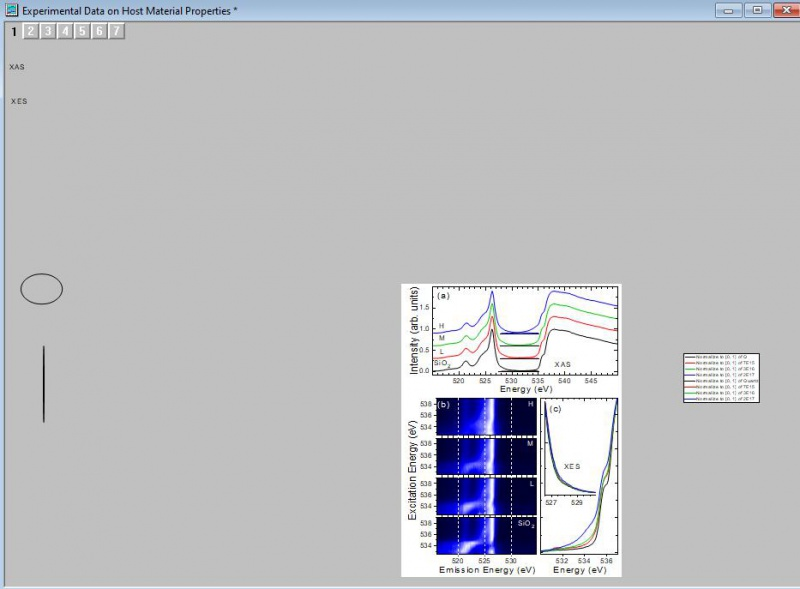
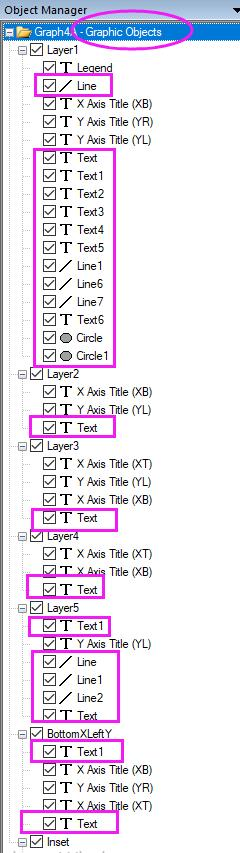

FAQ-1136 凡例が見つからない/グラフが重い/グラフのエクスポートまたは統合で大きな空白ができるのはなぜですか?
zoom-all-show-graph-contents
最終更新日：2022/12/13
グラフページは、グラフウィンドウ内部の白い領域のことです。デフォルトでこの領域外にあるすべてのものは、印刷やエクスポートの対象になりません。
凡例、テキストラベル、描画オブジェクトといったグラフオブジェクトが、グラフウィンドウ内の灰色の領域に意図せず移動したり配置していることがあります。また、スクリプトによって誤った場所にグラフオブジェクトが生成されることもあります。
これは以下のような問題の原因となることがあります。
- 凡例が見つからない。グラフ操作：凡例：凡例の再構成メニューまたは、ツールバーボタンは凡例を再構成するだけであり、位置は復元しないため、これらを使っても凡例が表示されない。
- エクスポートまたはコピー時に、グラフが縮小したり、余分な空白ができたり、予期しないテキストまたは描画オブジェクトが表示される。
- レイヤを配置したり、グラフウィンドウを結合すると、一部のグラフが大幅に縮小して予期しない空白ができる。
- ページをレイヤに合わせたり、レイヤに余白を追加したりすると、レイヤが縮小し、予期しない空白ができる。
- グラフ ウィンドウの動作が遅い。
 | 凡例オブジェクトが行方不明になることがあります。凡例が追加または再構築できない場合は、凡例が既に存在するものの、ページの外にあって表示されていない可能性があります。グラフ操作: 凡例: 凡例位置のリセットをクリックすると、凡例がデフォルトの位置に復元されます。
|
グラフウィンドウに問題がある場合のデバッグ方法
- 表示：全てズームを選択して、グラフウィンドウ内にある項目全てが表示される方にズームアウトします。グラフをズームアウトすると、グラフページ領域外にある何かを見つけ出すことができるようになります。
- 
- ワークスペースの右側に配置されているオブジェクトマネージャウィンドウを開きます。一番上のグラフの階層を右クリックして、表示されるメニューからグラフオブジェクトの表示を選択します。これで、グラフに追加されているラベル、凡例、描画オブジェクト（楕円や矩形、矢印など）のすべてが表示されます。各オブジェクト上でクリックして位置を確認して不要なものは削除します。テキストオブジェクトが過剰にある場合、グラフでの操作が遅くなります。
- 
- グラフのエクスポートとページのコピーに関する問題ですが、Originはデフォルトでページ領域をエクスポートまたはコピーします。グラフエクスポート時の余白の制御が余白詰めまたはページ切詰めに変更されていることがあります。:
- 環境設定：オプションメニューを選択します。ページタブを開き、余白の制御を確認します。余白詰めまたはページ切詰めに設定されている場合、Originは、灰色の領域も含めたグラフウィンドウ内にある全ての項目をコピー/エクスポートします。デフォルトである、ページ部分に戻してください。
- ファイル：エクスポート（詳細）メニューでグラフをエクスポートする場合は、エクスポート設定の余白の制御が境界または余白詰めになっていないか確認してください。自動の場合は、環境設定：オプションの設定が使用されます。デフォルトである、ページ部分に戻してエクスポートしてください。
必要なOriginのバージョン: 9.1 SR0以降
キーワード:凡例が見つからない, 凡例が消えた, 余白, 灰色の領域, グラフエクスポート, ページコピー, 余分な空白, テキストが消えた, 非表示オブジェクト, 空のフレーム, 非表示テキスト, 見えないオブジェクト